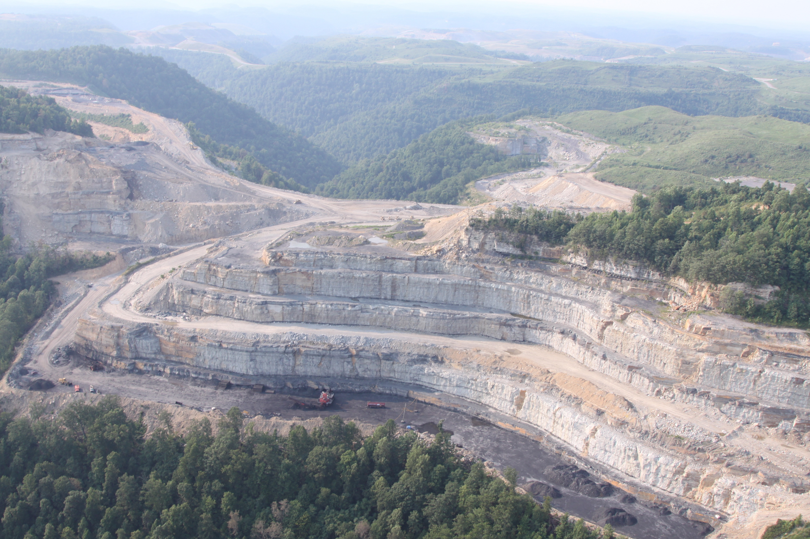
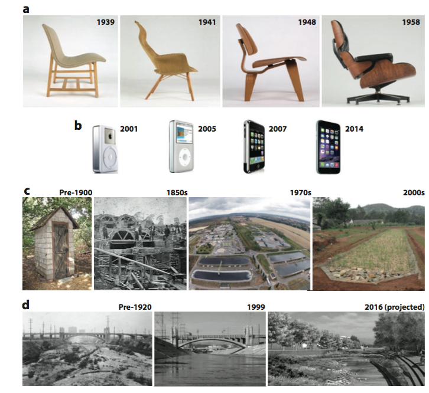
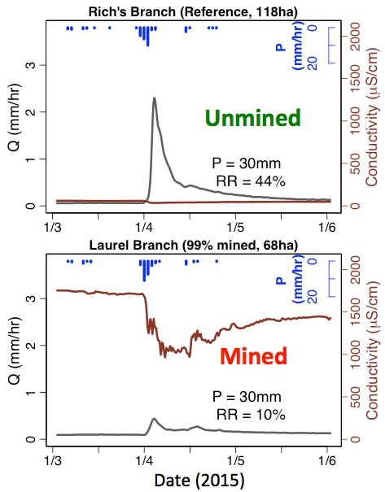

I like to work on broad theoretical ideas paired
with analysis and visualization of water data from
in situ sensors at field sites and larger
publically available spatiotemporal datasets.
Mostly this means I spend a lot of time
programming in R. In fact this whole website
was made using RMarkdown. For examples of my work
you can go to my github, scroll down here
or look at my ShinyR data applications:
Some visual examples of current and past projects

Mining progressing in Mud River, WV

Dramatic changes to water chemistry in mined watersheds of West Virginia

Thinking about design as a field that links landscape architecture, applied ecology, iphones and chairs

Mining changes hydrology and chemistry of streams, turning watersheds from stormflow dominated to baseflow dominated systems